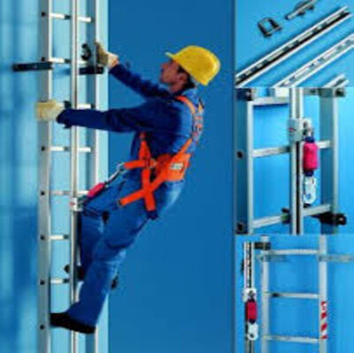

Our Products
Discover unparalleled craftsmanship and reliability with The Sagarmatha Ladder Company's range of premium climbing solutions, meticulously designed to elevate your safety and efficiency in every ascent. Explore a collection that combines cutting-edge technology with time-tested quality for a seamless and secure climbing experience.
Why Us?
Reasons Why You Should Shop with Us:
- Wide selection of high-quality products
- Fast and reliable shipping options
- Exceptional customer service
- Competitive prices and frequent discounts
- Secure and convenient online shopping experience
- Flexible return and exchange policies
Our Guarantee
At The Sagarmatha Ladder Company, we promise quality and safety with every step, along with the minimum delivery time. Your satisfaction and safety are our top priorities.If you're not satisfied within 30 days, get a full refund—no questions, just safety.
About Us
The main motive of the company and it's story is shortly described below.
- What we do?
- Welcome to The Sagarmatha Ladder Company, where quality and innovation converge to elevate your ascent. Established with a commitment to providing premium climbing solutions, we specialize in crafting top-notch ladders that blend durability, safety, and functionality. At The Sagarmatha Ladder Company, we understand the importance of reaching new heights, and our products are designed to support your journey with excellence.
- Our Story
- The Sagarmatha Ladder Company began its climb to success with a vision rooted in reliability and precision. Originating from a passion for craftsmanship and a dedication to customer satisfaction, our story unfolds through years of continuous improvement and a relentless pursuit of ladder perfection. From humble beginnings to becoming a trusted name in the industry, our history is marked by milestones of innovation and a steadfast commitment to providing ladders that stand the test of time. Join us on this ascent as we continue to write the chapters of The Sagarmatha Ladder Company's remarkable journey.
For more detailed information about other ladders, visit the FEATHERLITE: CANADA'S #1 Professional Brand.